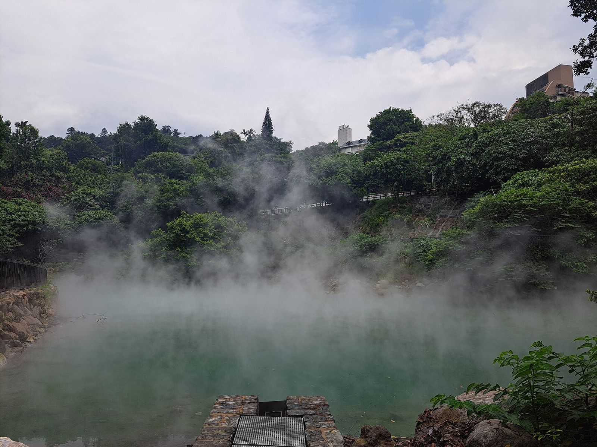

베이터우 프라이빗 온천, 예약할까 현장 대기할까?
같은 베이터우라도 호텔마다 받는 방식이 달라서 — 가기 전에 '예약제인지, 줄 서는 곳인지'만 알아도 기다리는 시간이 줄어요.
게시
"주말에 그냥 가면 베이터우 프라이빗 온천에 바로 들어갈 수 있을까?" 베이터우 당일 온천을 계획하면 꼭 나오는 질문이에요. 베이터우 온천 호텔들의 공식 안내를 바탕으로 2026년 10월 기준으로 정리해봤어요.
01 · 베이터우 프라이빗 온천 한눈에 비교하기
| 호텔 (공식 안내 기준) | 프라이빗 탕 받는 방식 | 1회 이용 시간 (2026년 10월 기준) |
|---|---|---|
| 일승생 가가야(日勝生加賀屋) | 온라인 예약, 예약 후 10분까지 보류 | 2인 90분 |
| 베이터우 아태(北投亞太) | 현장 대기 또는 7일 이내 예약 | 2인 120분 |
| 베이터우 리시(北投麗禧) | 예약제, 24시간 운영 | 호텔 안내 확인 |
| 수이메이(北投水美) | 예약 없이 현장 대기 | 호텔 안내 확인 |
요금은 호텔·요일·인원에 따라 달라서 이 글에는 넣지 않았어요. 요금은 방문 전 각 호텔 공식 안내를 확인하세요.

02 · 예약제 vs 현장 대기, 뭐가 다를까
예약제는 시간 약속이 핵심 가가야는 예약을 10분까지만 잡아두고, 늦게 도착하면 끝나는 시간을 미뤄주지 않고 이용 시간이 줄어든다고 안내해요. MRT 환승 시간까지 넉넉히 잡고 출발하세요.
현장 대기는 일찍 가는 쪽이 유리 수이메이처럼 예약을 받지 않는 곳은 도착 순서대로 안내해요. 주말·공휴일엔 대기가 길어질 수 있으니 오전이나 이른 오후를 노려보세요.
둘 다 되는 곳은 전화로 확인 아태처럼 현장 대기와 예약을 모두 받는 곳은 가기 전에 전화로 빈 시간을 묻는 게 확실해요.
03 · 베이터우 온천 들어가기 전에 알아두면 좋은 규칙
인원 기준은 대부분 2인 소개한 호텔의 프라이빗 탕은 2인 기준이고, 방 크기에 따라 최대 4인까지 받는 곳도 있어요. 아이 기준(키·나이)도 호텔마다 달라요.
탕 안에서는 음식 금지인 곳도 가가야는 위생 때문에 프라이빗 탕 안에 음식을 가지고 들어갈 수 없어요.
세면도구는 챙겨 가기 가가야는 정부 정책에 맞춰 2025년 1월부터 일회용 어메니티를 주지 않아요. 칫솔 같은 건 직접 챙기는 게 편해요.
04 · 비 오는 날 베이터우, 이렇게 움직여요
MRT 신베이터우 지선 이용 단수이신이선 베이터우역에서 신베이터우행 지선으로 갈아타면 온천가 입구에 바로 닿아요.
비 오는 날은 대기가 몰릴 수 있어요 야외 관광 대신 실내 온천을 찾는 사람이 늘 수 있으니 예약제 호텔을 고르는 편이 마음 편해요.
태풍 예보가 있으면 운영 여부를 호텔에 먼저 확인하세요.
베이터우까지는 MRT로 가니 교통카드 잔액은 타이베이 이지카드 잔액 확인·충전 글을 보고 미리 채워 두세요. 태풍 시즌이라면 대만 태풍 결항 대처도 함께 보면 좋아요. 온천 뒤에는 따뜻한 대만 음식이 당기기 마련이에요. 타이베이 대만 음식 맛집에서 저녁 메뉴를 고르고, 동선은 타이베이 맛집 지도에서 한 번에 확인해 보세요.
지도에서 타이베이 맛집도 확인해보세요
온천 끝나고 들를 타이베이 맛집을 지도에 찜해두세요.